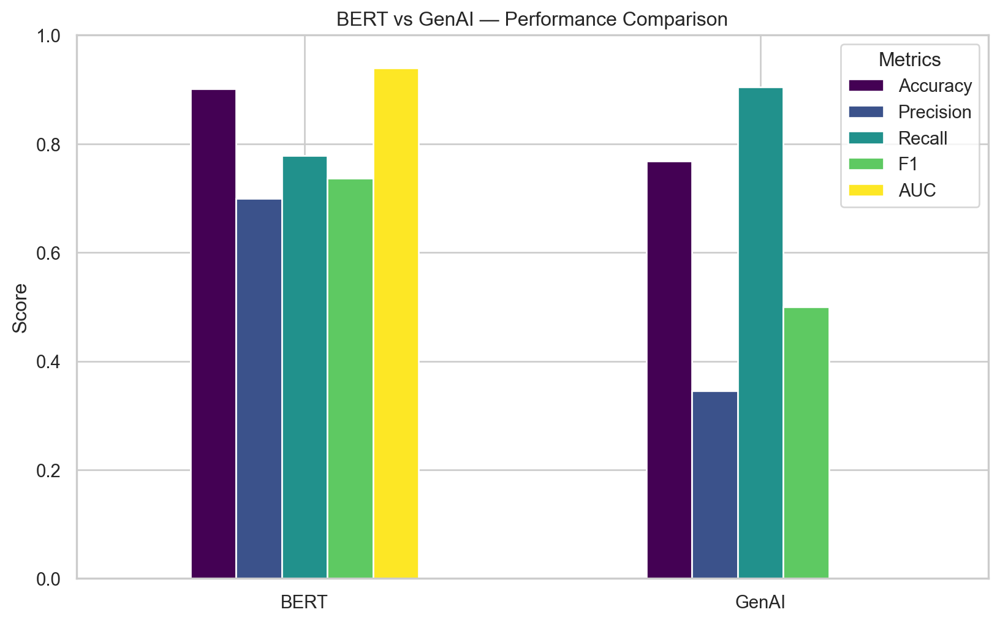

A Business-Focused Evaluation Using Starbucks Customer Reviews
Author
Muireann Ryle
Published
April 16, 2026
Overview
This project compares two modern NLP approaches — a fine‑tuned BERT model and a Generative AI (Llama 3) zero‑shot classifier — to determine which is more effective for sentiment analysis in a real business context. Using 850 Starbucks customer reviews scraped from ConsumerAffairs, the project evaluates both models on accuracy, precision, recall, F1‑score, and AUC‑ROC. The results show that while both models have strengths, fine‑tuned BERT significantly outperforms GenAI on imbalanced datasets and provides more reliable sentiment classification for operational decision‑making.
Business Problem
Starbucks operates over 32,000 stores globally, generating massive volumes of customer feedback. Manual review is inefficient and risks overlooking key insights. Automated sentiment analysis enables:
Monitoring customer experience at scale
Identifying underperforming locations
Detecting emerging issues in products or service
Supporting data‑driven operational decisions
The goal of this project is to determine which NLP approach — BERT or GenAI — provides the most accurate and reliable sentiment classification for business use.
Dataset
The dataset consists of 850 Starbucks reviews (2000–2023) containing:
Reviewer name
Location
Date
Rating (1–5)
Text review
Image links
Preprocessing
Removed rows without ratings → 705 reviews remaining
Tokenised using bert-base-uncased WordPiece tokenizer
Methodology
BERT Model
Model: BertForSequenceClassification
Fine‑tuned using PyTorch + HuggingFace
Weighted cross‑entropy loss to address class imbalance
Hyperparameters included:
Learning rate: 2e‑5
Batch size: 16
Epochs: 4
Warmup ratio: 0.1
Weight decay: 0.01
Early stopping based on validation F1
Evaluated using accuracy, precision, recall, F1, AUC‑ROC
GenAI Model (Llama 3)
Zero‑shot prompting
Locally hosted Llama 3 model
Prompt: “Classify the sentiment as Positive or Negative.”
API call for each review
Predictions mapped to binary labels
Results
BERT Performance
Metric
Score
Accuracy
0.901
Precision
0.700
Recall
0.778
F1‑Score
0.737
AUC‑ROC
0.940
Strong performance despite class imbalance
High AUC‑ROC indicates excellent class separation
Negative class performs better due to dataset skew
Weighted loss improved balance but did not fully eliminate bias
GenAI Performance
Metric
Overall
Negative
Positive
Precision
0.345
0.98
0.35
Recall
0.905
0.75
0.90
F1‑Score
0.50
0.85
0.50
Very high recall for Positive class → over‑classification of positives
Very low precision → many false positives
Lower overall accuracy (0.768)
Zero‑shot approach struggles with imbalanced data
Model Comparison - Executable code
Code
import pandas as pdimport matplotlib.pyplot as pltimport seaborn as snssns.set(style="whitegrid")bert_results = {"Accuracy": 0.901,"Precision": 0.700,"Recall": 0.778,"F1": 0.737,"AUC": 0.940}genai_results = {"Accuracy": 0.768,"Precision": 0.345,"Recall": 0.905,"F1": 0.500}df = pd.DataFrame([bert_results, genai_results], index=["BERT", "GenAI"])dfplt.figure(figsize=(10,6))df.plot(kind="bar", figsize=(10,6), colormap="viridis")plt.title("BERT vs GenAI — Performance Comparison")plt.ylabel("Score")plt.ylim(0,1)plt.legend(title="Metrics")plt.xticks(rotation=0)plt.show()
<Figure size 960x576 with 0 Axes>

Comparison
BERT outperforms GenAI across all major metrics
GenAI shows strong recall but poor precision → risky for business use
BERT is more reliable for operational decision‑making
GenAI may be useful for exploratory analysis but not for high‑stakes classification
Ethical & Responsible AI Considerations
The project evaluates both models against the EU’s Ethics Guidelines for Trustworthy AI, focusing on:
Human oversight: Models should support, not replace, human judgement
Robustness: Systems must be resilient to errors and adversarial inputs
Privacy: No personal identifiers used; data handled securely
Transparency: BERT pipeline is traceable; LLMs remain “black‑box”
Fairness: Class imbalance introduces bias; must be monitored
Environmental impact: Large models require significant energy
Accountability: Clear documentation and responsibility required
Business Relevance
Automated sentiment analysis enables Starbucks to:
Identify underperforming stores
Detect emerging customer issues
Prioritise operational improvements
Enhance customer satisfaction
Reduce manual review workload
BERT’s superior performance makes it the more suitable model for deployment in a real business environment.
Limitations
Imbalanced dataset affects both models
Neutral reviews excluded
GenAI performance depends heavily on prompt quality
BERT requires computational resources for fine‑tuning
Future Work
Explore data augmentation to address imbalance
Test additional transformer models (RoBERTa, DistilBERT)
Apply prompt engineering to improve GenAI performance
Incorporate explainability tools (LIME, SHAP)
Expand dataset for more robust training
Reflection
This project strengthened my skills in NLP, model fine‑tuning, and performance evaluation. I gained hands‑on experience with BERT, Llama 3, PyTorch, HuggingFace, and API‑based model integration. It also deepened my understanding of responsible AI principles and the practical challenges of deploying sentiment analysis systems in real business environments.